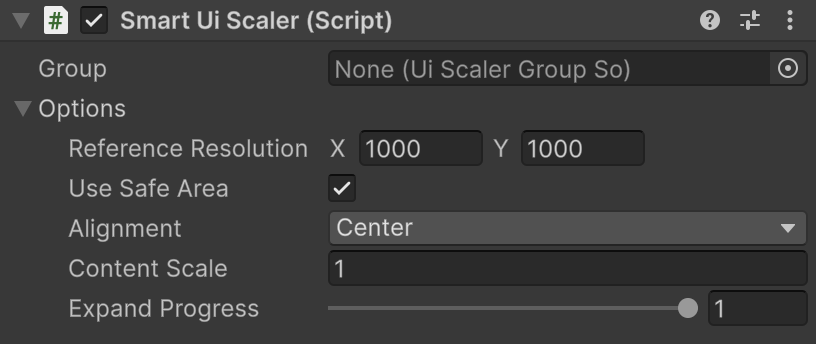

Smart Ui Scaler component
The main component of this plugin. Replacement for Canvas Scaler.

Warning
This Ui Scaler only works in Canvases with Overlay Screen Space Render Mode or Camera Screen Space Render Mode where attached camera is rendering directly to screen. When attached camera renders to Render Texture - this Ui Scaler cant receive the screen space area of the rendered image and this information should be additionaly provided.
Group field
Used to assign Ui Scaler into shared group with shared options. For more information see Ui Scaler groups.
Option fields
These fields are used when Ui Scaler is not assigned into a group.
| Field | Description |
|---|---|
| Reference Resolution | The resolution the UI layout is designed for. |
| Use Safe Area | Use only the screens safe area or whole canvas screen area. |
| Alignment | Controls the alignemnt inside canvas screen area. |
| Content Scale | Controls the children scale. Recommended scale is [0.1, 1.0]. |
| Expand Progress | Controls occupied space between reference resolution and canvas screen area. Allowed value is [0.0, 1.0]. |